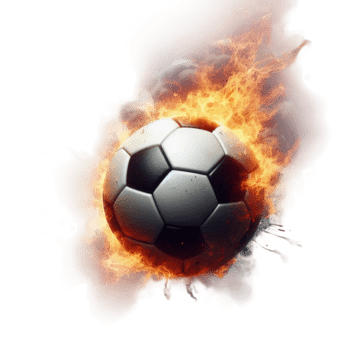

00:00
Identifíquese, socio.
Ingresar
¿Qué club te gusta, socio?
❮
Huracán
River Plate
Boca Juniors
❯
¡Quiero ser socio!
Tu Vitrina de Socios
Tabla de Posiciones
N°
Nombre
Club
Tiempo
Cargando pregunta...
Opción 1
Opción 2
Opción 3
Opción 4
La fe del hincha...
Volver al menú